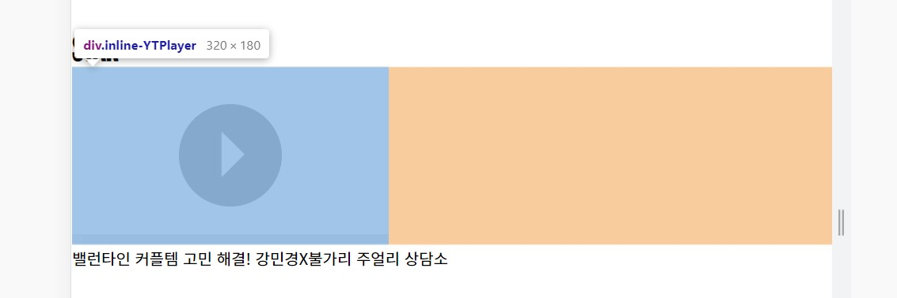
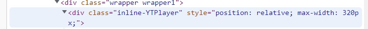
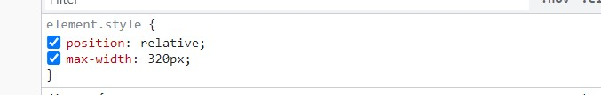
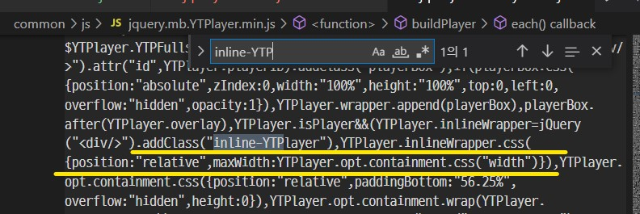
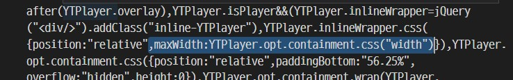

YTPlayer 제어
2022-04-26
YTPlayer의 video width 값을 제어하기
- 포트폴리오에 유튜브 영상을 삽입하면서 가로크기를 제어하고 싶었다. 유튜브 영상 삽입은 YTPlayer 스크립트를 인용하여 사용했다.
- width 값이 태그에 직접적으로 설정되어 있는 것을 확인하였다.
- 
- inline-YTPlayer라는 클래스값은 내가 준 게 아니기 때문에 스크립트에서 만들어 지정한 것이었다.
- 이 클래스 안에 지정된 기본적 크기가 있기 때문에 아무리 css 파일로 width 값을 변경해도 전혀 변경되지 않았다.
- 
- 
- 그러므로 스크립트 파일을 열어 클래스 값을 검색한다.
- 
- 찾았다 요놈!
- 이 부분 때문에 max-width값이 설정되어 있었던 것이다.
- 이 부분을 지우고, 새 이름으로 저장한다.
- 
- 이제는 css파일로 width값을 제어할 수 있다!